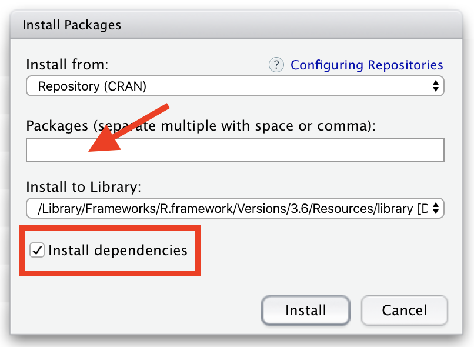
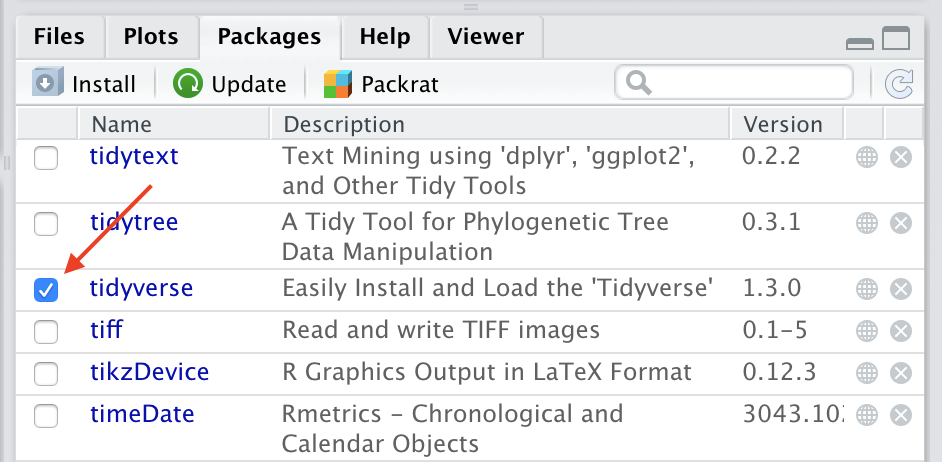
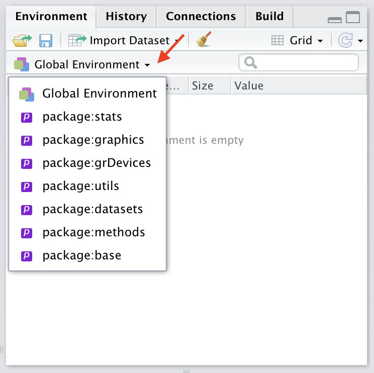
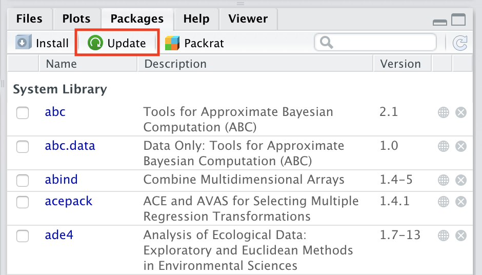
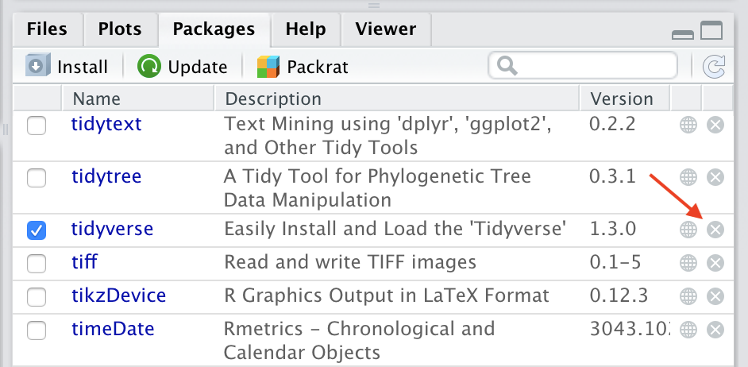

8 Module 03
9 Extending the Functionality of R
9.1 Objectives
The goal of this module is to show you how to extend the base functionality of R by installing and loading packages.
9.2 Preliminaries
- Install this package in R: {easypackages}
9.3 R Packages
One of the fantastic things about R, and one of the reasons it is such a flexible tool for so many types of data analysis, is the ability to extend its functionality in a huge variety of ways with packages. Packages are sets of reusable R functions created by the core development team or by users and are akin to libraries in other programming software, like Python. As of January 2020, there are over 15,300 packages that have been contributed to the most common package repository, hosted on the Comprehensive R Archive Network (CRAN) site.
From the console prompt, packages can be installed into R (using the install.packages() function, with the name of the package in parentheses) and then loaded (using the require() or library() functions), which then gives the user access to the functions contained therein. Both RStudio and the base R GUIs for MacOS and Windows have built-in package managers that allow you to search for and install packages.
Each package includes a namespace associated with the functions contained therein, and those functions are loaded into their own, separate R environments, distinct from the global environment, where the variables we assigned values to in Module 01 were created. An environment can be thought of as a collection of objects (functions, variables etc.) associated either globally, with the R interpreter (the “R_GlobalEnv”) or with a particular package and its namespace. In RStudio, you can see all of the objects associated with a particular environment in the Environment tab.
If a package is loaded that has a function with the same name as one in a previously loaded package or in base R, then the older function will be masked and the newer will be used if called by a user. This is because whenever an object is referenced in a command, the R interpreter searches for that object in various loaded environments in a particular order and operates on the first one it encounters. The global environment is searched first, followed by the environments associated with each loaded package in reverse chronological order of when they are loaded and ending with the base R environment.
FROM: Wickham (2019). Advanced R, Second Edition. Chapman & Hall/CRC.
However, functions from different packages with the same name can be called explicitly by using the :: operator, using the construct package-name::function to access the desired namespace and environment. A particular function can be called in this way even if the package as a whole has not been loaded into R using library() or require(). The search() function can be used to return a vector of environment names in the order they will be searched.
Installing Packages
NOTE: A list of packages we will be using in this course is available here.
Using the base MacOS GUI
- Select the Packages & Data menu.
- Choose Package Installer.
- Select a package repository to install from, e.g., CRAN (binaries).
- The first time you go to install packages, you will be prompted to select a mirror site (i.e., the remote server from where you can download any of the packages hosted in the selected package repository).
- Select an install location. I usually install packages to the system rather than user level.
- Check the box “Install dependencies”.
- Select a package to install.
Using the base Windows GUI
- Select the Packages menu.
- Choose Install package(s)….
- By default, the package repository that you will install from is CRAN (binaries).
- The first time you go to install packages, you will be prompted to select a mirror site (a.k.a., the remote server from where you can download any of the packages hosted in the selected package repository).
- Select a package to install.
- By default, packages are installed at the system level (inside of the library folder within your R installation), and any missing dependenices are also installed by default.
Using the R console prompt
- Use the function
install.packages("<package name>"), where you include, between the quotes, the name of the package you want to install. This command installs the package, by default, to the user level, though this can be changed by providing a path to install to using thelib="<path>argument. Other arguments for this function can be set to specify the repository to download from, etc.
Using RStudio
- Select the Packages tab and then click the “Install” button.
- A dialog box will open where you can choose where to install the package from (the central CRAN repository is typically the source you will use) and the install location on your computer.
- You can install packages either to the user level library (in which case, only the user who is logged in when the package is installed will have access to it) or to the system library (which will make the package available for all users).
- Type the name of the package you want to install in the text field in the middle of the dialog box (code completion will list available packages that match what you are typing as you type). You can install multiple packages at the same time by separating them with a space or comma.
- Make sure the “Install dependencies” checkbox is selected… this will automatically check whether other packages that are referenced in the package you want to install are already installed and, if not, will install them as well.

Loading and Attaching Packages
Note that installing packages simply places them into a standard location on your computer. To actually use the functions they contain in an R session, you need to also load them into your R workspace.
Using the base MacOS GUI
- Select the Packages & Data menu.
- Choose Package Manager.
- Check the box next to the package name.
Using the base Windows GUI
- Select the Packages menu.
- Choose Load package….
- Select the package to load.
Using RStudio
- You can load a package interactively in RStudio by clicking the checkbox next to the package name in the Packages tab.

Using the console prompt or a script
- The most common way that you will load packages is to do so either interactively at the console prompt or in a script using the command
library(<package name>)with the package name, not in quotes, as an argument. - The
require()function is nearly identical to thelibrary()function except that the former is safer to use inside functions because it will not throw an error if a package is not installed.require()also returns a value of TRUE or FALSE depending on whether the package loaded successfully or not. However, I almost always use thelibrary()function in my scripts. Usinglibrary()andrequire()both load a package’s named components (its “namespace”) and attach those to the global environments search list.
NOTE: When loading a package with
library()orrequire(), the package name need not be in quotes, although it works if you were to do that.
Be aware that if a named function of a package conflicts with one in an already loaded/attached package, then by default R will warn of the conflict. In that case, it is good form to use explicit function calls, i.e., use the :: operator to specify first the package and then the function (e.g., dplyr::filter()) you wish to call.
Working with Packages
You can use either of the following to list the set of packages you have installed:
library()installed.packages()
The command
(.packages())can be used print out the set packages that have been loaded/attached in your current workspace.
NOTE: In the example above, the
.packages()function is wrapped in parentheses to immediately print the result of the function.
In RStudio, you can also see a list of all loaded packages by clicking the down arrow next to “Global Environment” in the Environment tab.

- The command
detach(package:<package name>), where “package name”, not in quotes, is the name of the package you want to unload, will unload a currently loaded package from memory. You can also do this interactively in RStudio by unchecking the box next to the package name in the Packages tab. - To update your installed packages to the latest version, you can use the function
update.packages(). Using RStudio, you can also select “Update” from the Packages tab to get an interactive dialog box showing you what updates are available from CRAN and letting you install them.

- To remove installed packages from your R installation, you can use the function
remove.packages()or click the small “x” to the right of the package name in the RStudio packages tab.

To process several package at once, you can pass a vector of package names to many of these functions as an argument, e.g.,
remove.packages(c("abc","citr"))Finally, the {easypackages} packages makes installing and loading multiple packages “easy” by introducing two helper functions,
packages()andlibraries(). Both let you specify a vector of package names to either install (e.g.,packages(c("tidyverse", "magrittr"))) or load (e.g.,libraries(c("tidyverse", "magrittr"))). For these functions, package names need to be specified in quotation marks.
Concept Review
- Working with packages:
install_packages(),library(),require(),detach(),update.packages(),remove.packages(), and {easypackages} - Environments and namespaces:
::,search()